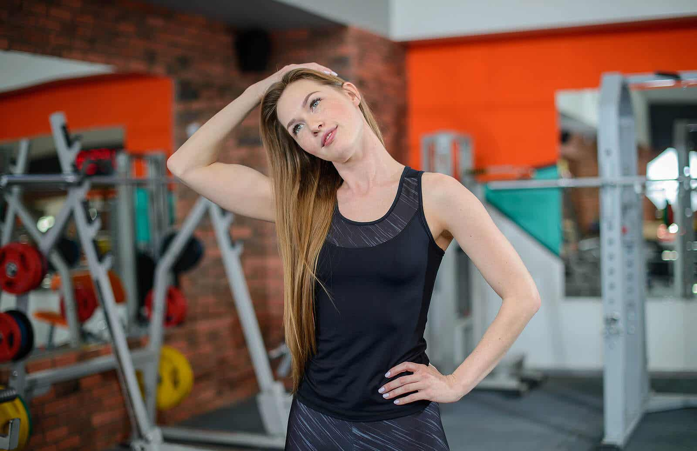
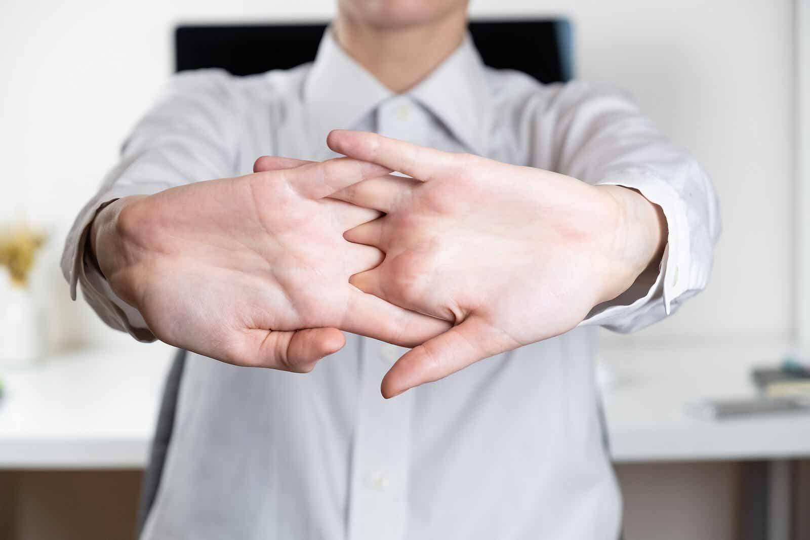
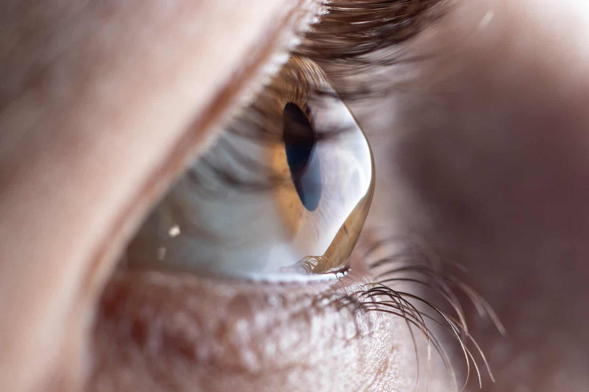

Por: Ariel Hurtado 08/12/2021
El cansancio, los nervios de la vida diaria o las preocupaciones son factores que provocan estrés. Dedicar unos minutos al día para hacer unos sencillos ejercicios nos ayudará a aliviar la tensión.
Conocer y aplicar distintas técnicas para combatir el estrés (o gestionarlo de la mejor manera posible) es más que necesario en la actualidad. Con ellas, podemos aliviar las tensiones acumuladas, mejorar y mantener la flexibilidad y, en líneas generales, sumar bienestar a nuestros días.
De acuerdo con los expertos de la American Psychological Association (APA) el estrés es un trastorno muy común en la población que afecta la calidad de vida. Se suele describir como una sensación de agobio, preocupación y agotamiento, que a menudo tiene repercusiones bioquímicas, fisiológicas y conductuales predecibles. Puede afectar a personas de cualquier edad, género y sexo.
La mayor parte de los casos son episodios leves que se alivian con un poco de descanso o la práctica de alguna técnica de relajación o distracción; sin embargo, hay quienes lo padecen de forma crónica y se ven obligados a recurrir a un tratamiento profesional.
La práctica diaria de ciertos ejercicios es una forma de evitar que las consecuencias del estrés se agraven y que causen mayores molestias. A continuación te compartiremos los 6 más fáciles para que no dudes en practicarlos cada vez que lo consideres necesario.
1. Relajar el cuello
El cuello es una de las primeras partes del cuerpo donde se perciben las consecuencias físicas del estrés. En él se concentra una tensión muscular que puede causar dolor e incluso dificultades en su movimiento.
Procedimiento
- Para empezar, inclina la cabeza hacia adelante y atrás, hacia un hombro y al otro.
- Luego, haz giros con la cabeza como si estuvieses tratando de hacer círculos con la nariz.
2. Calmar la tensión en los hombros
Junto con el cuello, los hombros suelen tensionarse debido al constante estrés. En algunas ocasiones llega a ser tan grave que se experimenta un fuerte dolor que solo se calma con analgésicos.
Procedimiento
- Sube y baja los hombros con un movimiento suave, uno a la vez y de forma alterna.
- Relájalos y deja que la cabeza caiga hacia adelante, como si el mentón quisiera apoyarse sobre el pecho.
- Luego, haz movimientos circulares con la cabeza sin estirar el cuello.
- Para combatir el estrés, repite estos movimientos cinco veces, relájate y has dos o tres series.
3. Aliviar la espalda y los brazos
Puede que el dolor en la espalda y la sensación de pesadez en los brazos sea el resultado de alguna situación estresante en el trabajo o el hogar. Si consideras que este es tu caso, no dudes en practicar el siguiente movimiento.
Procedimiento
- Extiende los brazos hacia la parte frontal del cuerpo, entrelaza los dedos de las manos entre sí y gira las palmas hacia adelante.
- Realiza un breve estiramiento, relájate y repítelo varias veces.
- Haz siempre estos y otros ejercicios de estiramiento de forma lenta y suave para evitar lesiones.
4. Relajar la columna
La tensión en la columna suele ser el resultado de permanecer mucho tiempo sentado o quieto en una misma postura. En esta se siente un leve dolor que puede empeorar dependiendo de lo estresante que sea la situación o el ambiente.
Procedimiento
- Siéntate en una silla, relaja la columna hacia adelante y afloja la cabeza entre las piernas, colgando los brazos. Sube y baja despacio.
- Pon las manos detrás del cuello y lleva los codos hacia abajo y el mentón hacia el pecho. Respira durante unos segundos, tratando de relajarte tanto como puedas y descansa.
- Manteniendo la posición sentada, mueve el tronco del cuerpo hacia un lado y hacia el otro, como si estuvieses tratando de rotar todo el torso.
5. Para las piernas
Cuando estamos sometidos a múltiples situaciones que nos causan estrés, las piernas se sienten doloridas y en ocasiones nos hacen sentir cansancio. Ejercitarlas a diario no solo reduce este riesgo, sino que promueve su buena circulación para evitar otros trastornos como la inflamación y las varices.
Procedimiento
- Siéntate delante de tu escritorio o mesa, empújate con las manos y estira las piernas tanto como puedas. Estira los pies varias veces y haz movimientos giratorios con los tobillos.
- Luego, de pie, apóyate en una pared, adelanta un pie y, flexionando la rodilla, estira la pierna de atrás por unos segundos.
- Descansa y repite el mismo movimiento con la otra pierna.
- Para combatir el estrés conforme practicas estos ejercicios, es recomendable que practiques la respiración profunda y procures despejar tu mente, concentrándote solo en inhalar y exhalar lentamente.
6. Visuales
Aunque pocas veces le prestamos atención, los ojos son una de las partes del cuerpo que más sufren las consecuencias del estrés y la sobrecarga laboral. Estos suelen cansarse y enfermar, en especial cuando los mantenemos durante varias horas frente a las pantallas de los dispositivos electrónicos.
Procedimiento
- Abre y cierra los ojos con fuerza.
- Luego, lleva la mirada hacia varias direcciones, tratando de centrarte en un punto específico.
- Para terminar, haz un suave masaje en el contorno de los ojos usando la yema de tus dedos.
Todos estos ejercicios son una buena terapia contra los síntomas del estrés. Se puede hacer uno solo, o bien hacerlos todos invirtiendo un poco más de tiempo. Recuerda que no solo debes apoyarte en la práctica de estos ejercicios. Para combatir el estrés debes aplicar otras técnicas de gestión, a la par que mantienes todo un estilo de vida saludable. Otras opciones para combatir el estrés son la aromaterapia, el mindfulness y los masajes relajantes.
Fuente: https://mejorconsalud.as.com/los-6-mejores-ejercicios-combatir-estres/
Comparte
Si te pareció interesante este vínculo, compártelo